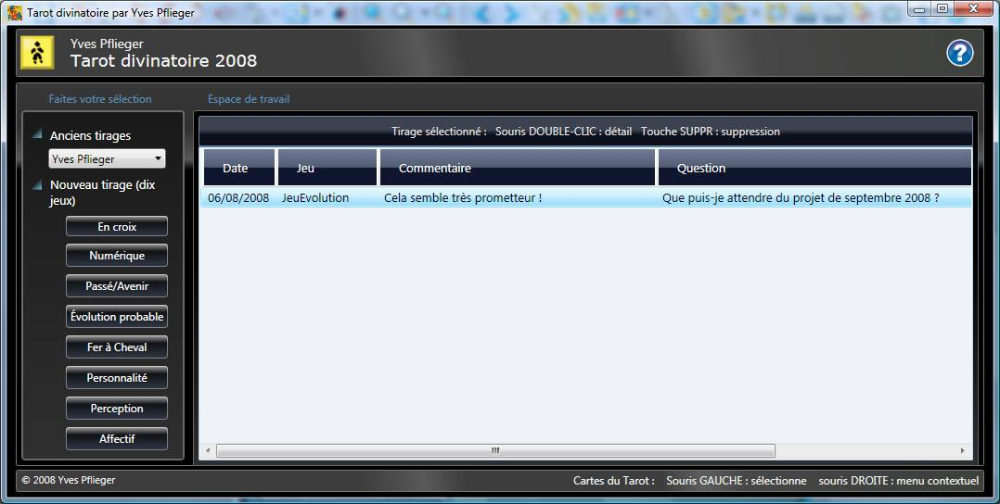
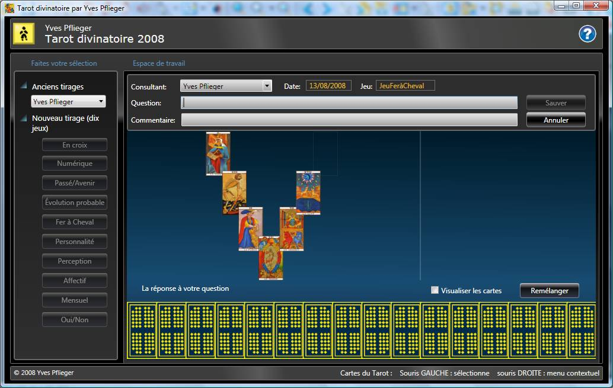
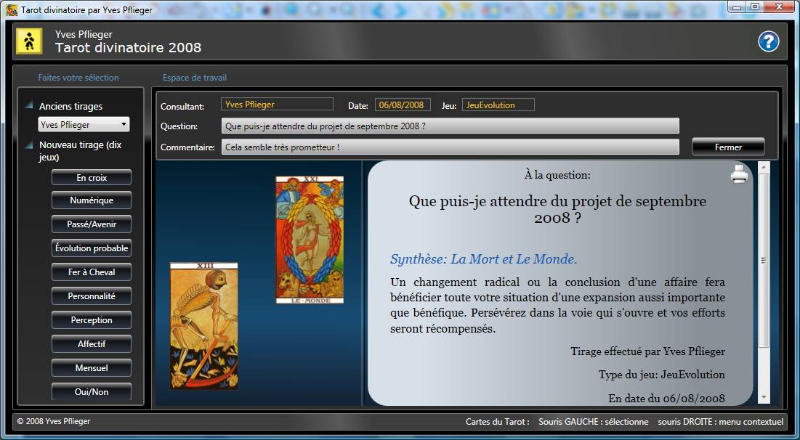
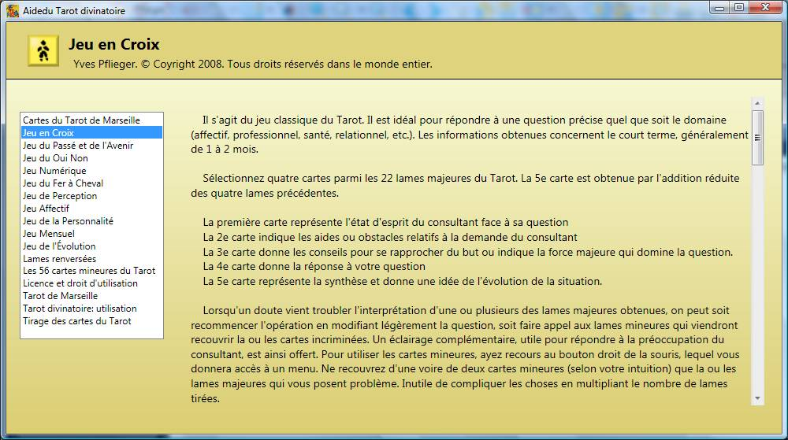

Tarot divinatoire de Marseille
« La graine, avant de croître, contient déjà toute l'information nécessaire pour se transformer en une fleur ou un arbre. » Appréhender les germes des situations futures pour s'y préparer — c'est tout l'intérêt du Tarot.
Historique
Le Tarot de Marseille est un jeu de cartes servant à la divination, principalement composé de vingt-deux cartes riches en symboles allégoriques : les arcanes majeurs. Ces lames sont ordonnées selon un schéma évolutif illustrant les étapes émotionnelles et matérielles que l'homme peut expérimenter. Ce chemin commence avec le Bateleur — initiative et jeunesse — et se termine avec le Monde — plénitude et triomphe. Le Fou, vingt-deuxième carte, sert de tremplin vers un nouveau voyage, dans une nouvelle dimension.
Aux arcanes majeurs s'ajoutent les arcanes mineurs, numérotés de 23 à 78 et répartis en quatre familles — Bâtons, Coupes, Épées, Deniers — chacune composée de quatre figures (Roi, Reine, Cavalier, Valet) et de dix cartes de l'As au dix. Ce vocabulaire de complément affine les grandes orientations issues des tirages majeurs.
Ce que propose le logiciel
- Tirages traditionnels fidèles au Tarot de Marseille
- Interprétation guidée, arcane par arcane
- Lexique symbolique intégré
- Impression et envoi des tirages par email
Les arcanes du logiciel



